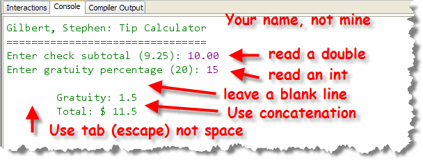

You've written several interactive programs already. Let's write one that incorporates several of the pieces you've alreay used—input of different types, calculations, and output.
The TipCalc Program
Write a console IPO program named TipCalc that reads a subtotal and gratuity rate and then computes the gratuity and total bill. Write the program "from scratch".
Here's what a sample interaction should look like along
with some notes about the program's requirements:

Follow the same steps as the problems in lecture this week. Once you have created the program, compile it and
then Check your results. Keep trying until you get a perfect
score. If you didn't do as well as you thought, you can watch this
video (from CS 170) for some tips.

While TipCalc asks you to write your program "from scratch", on PQ02, next week, I'll give you a "starter file", like I have for the other programs this week.